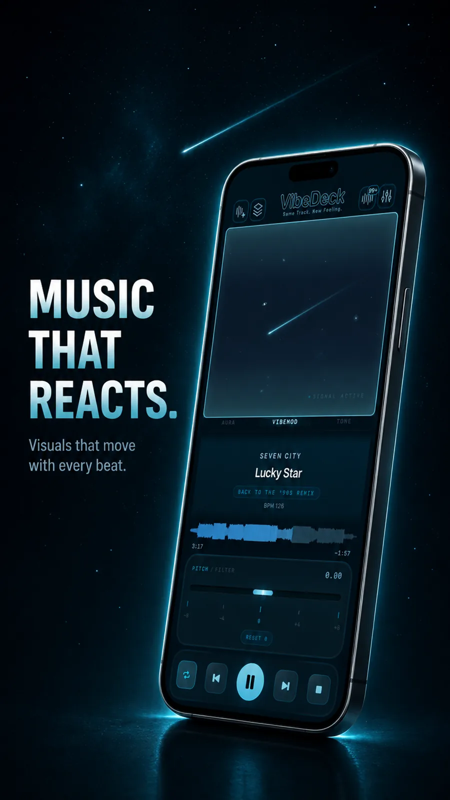
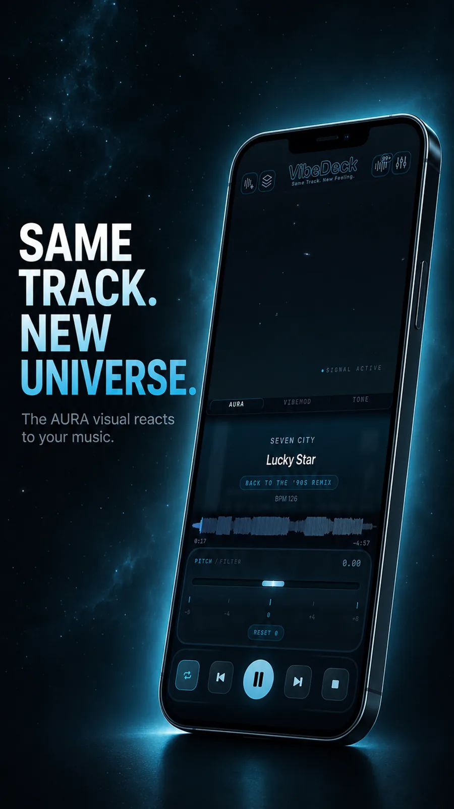
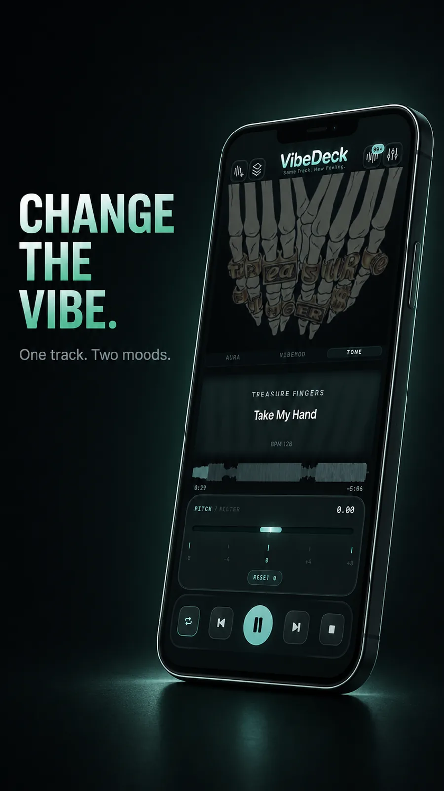
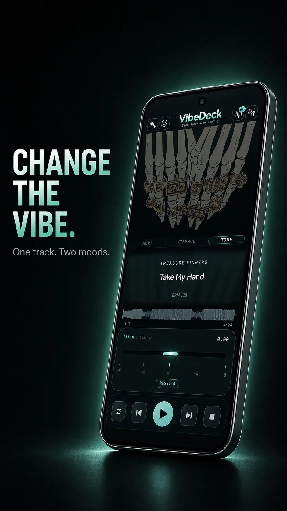

Playback
Full transport controls, waveform with scrubbing, BPM readout, and pitch/filter on the main screen. Same track. New feeling.
Offline music player for iPhone, iPad & Android
Offline music player for iPhone, iPad and Android that plays MP3, FLAC and WAV from your local files - with equalizer, pitch and tempo control. No WiFi needed.


VibeDeck is a premium music player for iOS and Android - for people who own their music and want to feel it again. Import your audio files and shape the sound in real time with a 3-band EQ and gain, bass boost, filter, limiter, pitch, tempo, and DJ tools - all on one dark, distraction-free screen.
Workflow
VibeDeck keeps the current track readable while the queue and EQ stay one move away. This offline music player is built for low light, fast scanning, and deliberate sound shaping from your local files.




Full transport controls, waveform with scrubbing, BPM readout, and pitch/filter on the main screen. Same track. New feeling.
See what's playing, search your library, and line up what's next without leaving the player. Night Mode strips the artwork for a calmer, distraction-free list.
3-band EQ + Gain, bass boost, filter, VibeMod audio-reactive processing, stereo balance, and real-time pitch shifting up to ±8 semitones. Built-in limiter - clean, punchy sound on any headphones.
VibeDeck for Android
An offline music player for your own files - with pitch, waveform, tone and sound controls on one focused screen.


The core player is free with no ads. VibeDeck Premium unlocks the full sound engine: pitch and filter, 3-band EQ with gain, limiter, VibeMod, TONE, AURA and Smart Metadata. Premium costs $1.99 per month, $9.99 per year, or $14.99 for a lifetime license.
FLAC, MP3 and WAV from your local files. No conversion, no cloud upload.
Fully. Your files stay on the device and play with no WiFi, no account and no tracking.
Yes. App Store for iPhone and iPad (iOS 17.0+), Google Play for Android.
Real-time pitch shifting up to plus or minus 8 semitones, independent tempo control, 3-band EQ with gain, waveform scrubbing with BPM readout, and the audio-reactive AURA visualizer, all offline.
More: FLAC player for iPhone, offline player for iPhone, offline player for Android, MP3 player with no ads, pitch and tempo control, VibeDeck Player vs VOX.
Download VibeDeck
VibeDeck is now available for iPhone, iPad and Android. Work with local audio files, shape the sound in real time, and keep your music offline. No account. No ads. No tracking.
VibeDeck is a premium music player for iOS and Android. It plays your local files without WiFi, an account, ads, or tracking. Pitch, EQ, waveform, and sound tools shape the same track into a new feeling. AURA adds an ambient visual world that breathes with your music. Your files stay on your device.